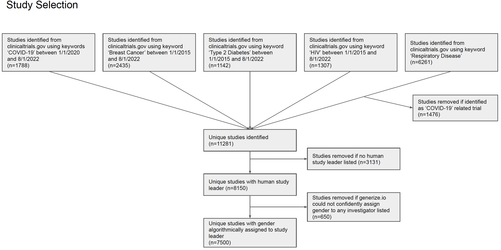

At a glance
- Audited thousands of US COVID-19 trial leadership rosters.
- Benchmarked gender representation against other disease areas.
- Linked leadership diversity with participant representation concerns.
Problem
- Rapid trial launches lacked oversight on leadership equity.
- Historic gender gaps risked repeating in urgent COVID-19 research.
- Needed transparent metrics to hold institutions accountable.
Solution
- Curated national trial registry, publication, and investigator datasets.
- Used NLP to identify leadership roles and infer gender representation.
- Built dashboards and briefs comparing specialties and sponsors.
Impact
- Highlighted underrepresentation of women relative to other disease areas.
- Prompted discussions with NIH and academic partners on inclusion goals.
- Provided methodology for monitoring equity in future clinical studies.
Role & toolkit
- Served as principal investigator guiding analytic design and narrative.
- Applied Python NLP, entity resolution, and statistical benchmarking.
- Engaged policy stakeholders to translate findings into actions.
Visual highlights

Study selection pipeline ensured comprehensive, comparable trial coverage.